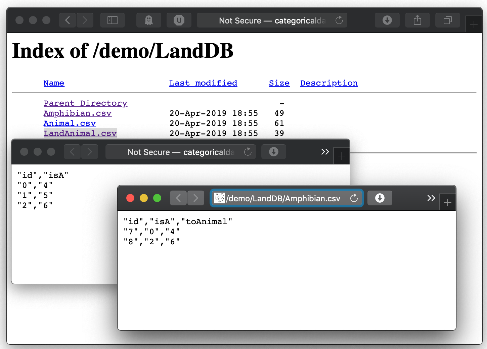
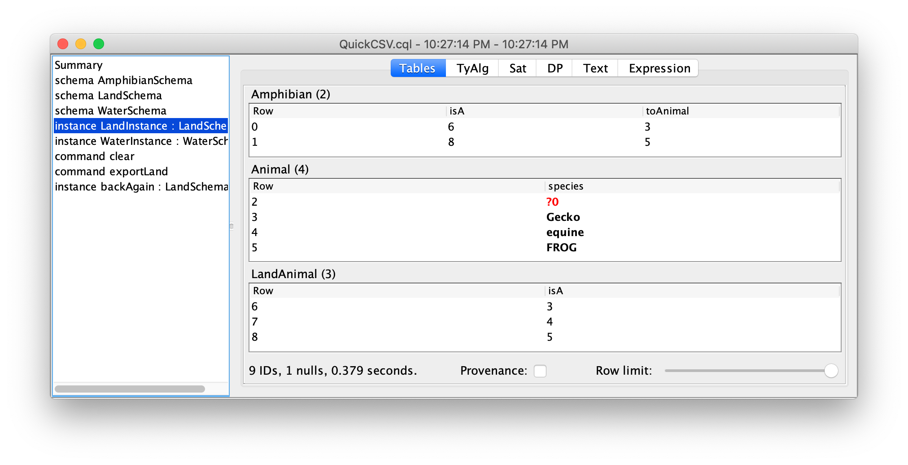

Categorical Databases
Home |
Download |
Getting Started |
Manual |
Wiki |
Papers |
Screen Shots |
Github |
Google Group |
Conexus |
Contact
CSV Import/Export
This example is recommended for anyone dealing with CSV data and is built-in to the IDE as QuickCSV. It imports a set of cloud-based CSV files about land and water animals into CQL, demonstrates basic CQL operations, and then exports the data to a local CSV file. We use SQL types (String, Integer, etc).
Our land and water schemas share a common overlap schema about amphibians, which we express using an import statement.
schema AmphibianSchema = literal : sql {
entities
Amphibian Animal
foreign_keys
toAnimal : Amphibian -> Animal
attributes
species : Animal -> String }
The schemas have data integrity constraints stating that every amphibian is an animal in one way. See the path equality example for details.
schema LandSchema = literal : sql {
imports
AmphibianSchema
entities
LandAnimal
foreign_keys
isA : Amphibian -> LandAnimal
isA : LandAnimal -> Animal
path_equations
Amphibian.isA.isA = Amphibian.toAnimal }
schema WaterSchema = literal : sql {
imports
AmphibianSchema
entities
WaterAnimal
foreign_keys
isA : Amphibian -> WaterAnimal
isA : WaterAnimal -> Animal
path_equations
Amphibian.isA.isA = Amphibian.toAnimal }
Next, we import CSV files over the internet. CQL expects one file per entity, with one column per foreign key or attribute. 
There are many options, such as providing a column to column name mapping during import, or to generate missing fields, etc; for details, see the built-in CSV example.
instance LandInstance = import_csv "http://categoricaldata.net/demo/LandDB/" : LandSchema instance WaterInstance = import_csv "http://categoricaldata.net/demo/WaterDB/" : WaterSchema
We conclude by exporting our data to a set of CSV files locally. First we clear out a folder, and the we export to the given folder.
command clear = exec_cmdline { "rm -rf exportedLand" }
command exportLand = export_csv_instance LandInstance "exportedLand/"
It's recommended to use a trailing slashes to indicate a directory, but the string is actually used as a prefix in a URL. We can import the local CSV data like so:
instance backAgain = import_csv "exportedLand/" : LandSchema